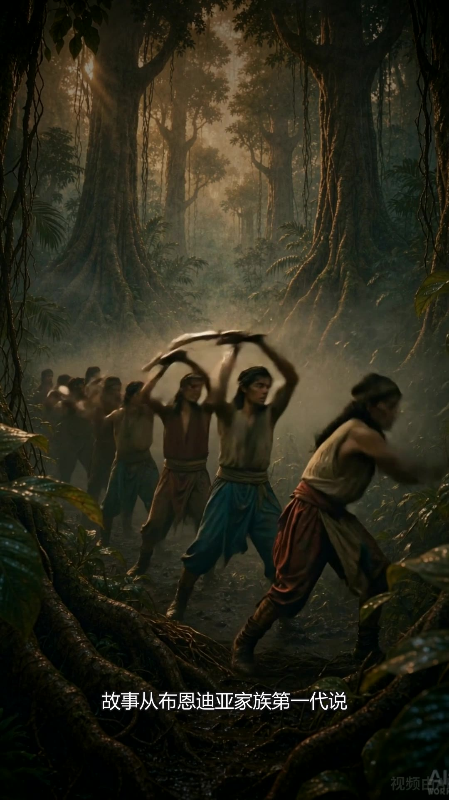
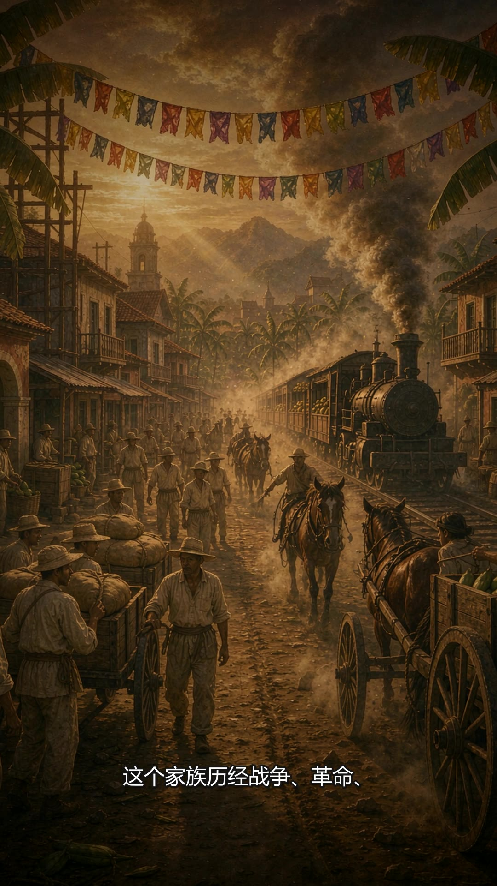
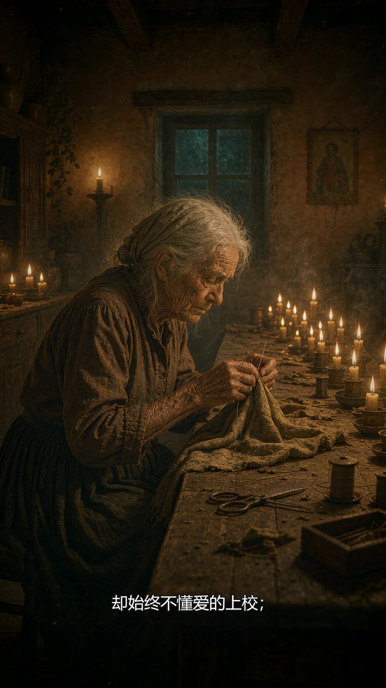
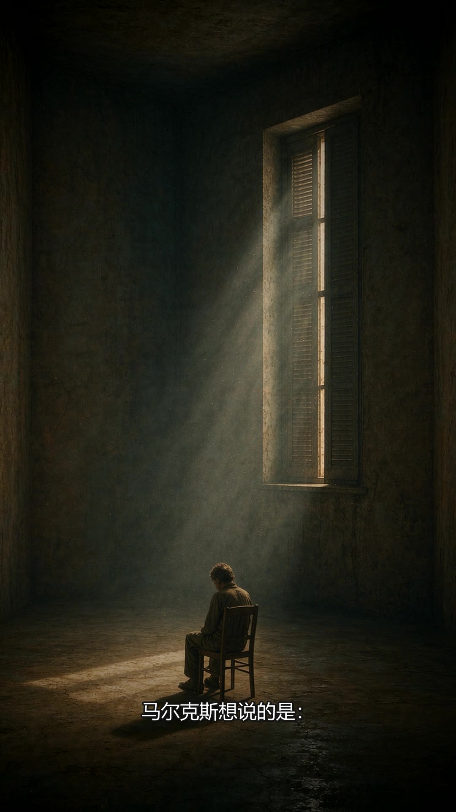
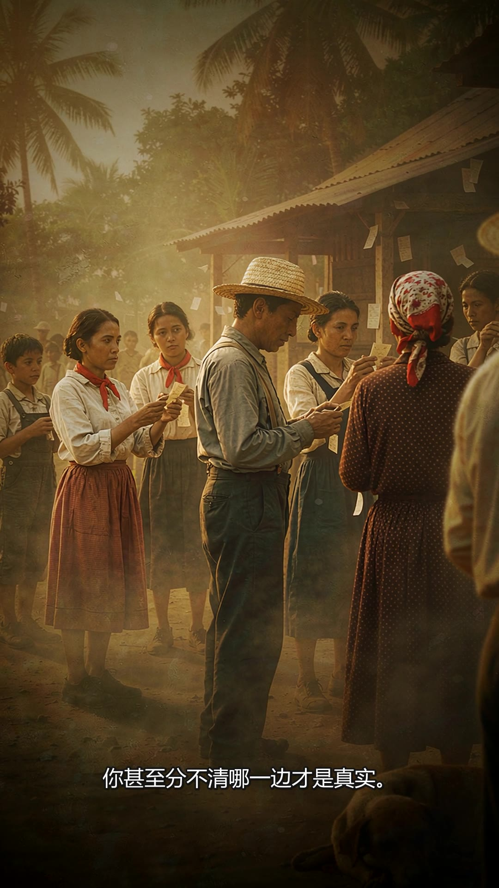
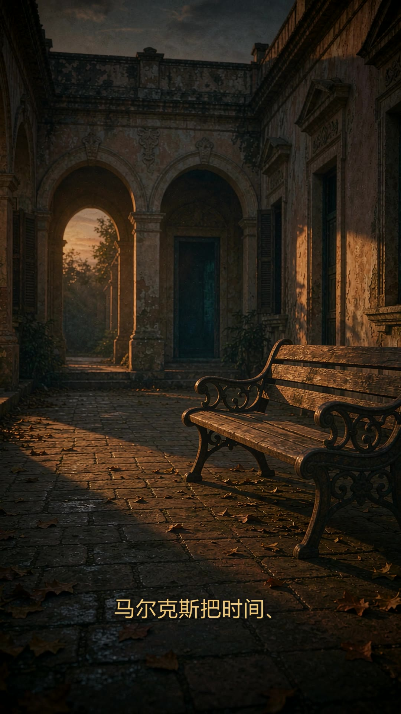

这不是一支孤立的视频，而是一套可复用的能力包：输入书名，自动完成剧本创作、旁白配音、 配图生成、动态视频生成与成片合成的全过程。作品《百年孤独》是它的一次实跑验证。
从「多年以后，面对行刑队」的开篇，到飓风抹去马孔多，用统一的魔幻现实主义油画风格串起七代人的命运。
开篇回想起 → 作者与诺奖 → 建村马孔多 → 世界新生伊始 → 蕾梅黛丝升天 → 金色蝴蝶 → 四年大雨 → 七代孤独 → 飓风与羊皮卷。






技能名 magic-realism-novel-video。触发清楚、流程明确、校验可执行——而不是把说明写得多。
一句话说清用途：给一个书名，自动产出一支 9:16 竖屏名著介绍视频。让 Agent 能一眼判断该不该用它。
写具体场景，不写泛。包括「用《X》做一条视频」这类口语触发，也明确列出不该用的情形。
能做什么：出剧本、合成旁白、生成配图、转动态视频、烧字幕合成片。同时框定能力边界。
八步流程，每步都有明确产出文件。第 2 步强制停下来给用户确认，防止一步跑到底全盘皆错。
写死交付物清单与路径，避免 Agent 输出一堆散乱解释却不落盘。
给《百年孤独》和《老人与海》两个例子，说明换书时哪些部分保留、哪些部分替换。
# 技能包 skills/magic-realism-novel-video/ ├── SKILL.md 主说明（必须存在） ├── reference.md 参数细节与踩坑 ├── scripts/ │ ├── gen_script.py 剧本 → script.md │ ├── gen_tts.py 旁白 → 音频/ │ └── build_video.py 合成 → 成片/ └── templates/ └── project.example.json
# 1. 准备项目配置（书名、画风、各段内容） python scripts/gen_script.py \ --project templates/project.example.json \ --out ./百年孤独 # 2. 合成旁白 python scripts/gen_tts.py \ --project templates/project.example.json \ --out ./百年孤独 # 3. 生成配图与动态素材后，合成成片 python scripts/build_video.py \ --project templates/project.example.json \ --out ./百年孤独 # 或者直接在 Agent 里说： /magic-realism-novel-video 百年孤独
从书名到成片，八个阶段，每一步都有落盘产物，可中断、可复核、可重跑。
这些是实际跑通一遍之后才发现的，已全部写进 reference.md，下次不用再踩。
计划 5 秒一段，实际旁白每段更长。解决办法是让素材慢放 1.6~2.0 倍来填满，而不是硬切音频——慢放之后反而更有纪录片的质感。
libass 对连续中文不会断行，WrapStyle: 0 也无效，字幕会直接顶出画面。唯一可靠的办法是在 ASS 里手动写 \N 断点。
delogo 从四周边界插值，在有笔触纹理的画面上会留下明显竖向条纹。改成裁掉底部 110px 再放大回原尺寸，等效放大 6%，完全无伪影。
pip install imageio-ffmpeg 会去 GitHub 拉二进制包，国内经常卡死。可靠做法是从清华 PyPI 镜像直接下载 wheel 文件，再本地安装。